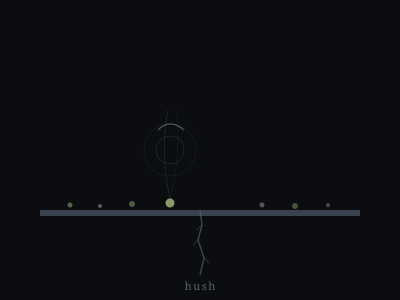

A mayfly's wing stops moving not when the flight ends but when the muscle that holds it open loses tension. The last visible state is not "at rest" — it is "losing tension," which looks like stillness but is not stillness. The wing is still changing; the change is just no longer visible to a viewer who measures only position.
This is true whether or not anyone is looking at it. A stopped wing is not the absence of motion. It is motion that has left the register we can read. The hush is not the silence after the sound. It is the last ripple of the sound, still moving, just no longer loud enough to be called a sound.
The faint arc in the picture is the wing's last visible position. The rings above it are ripples that have not yet stopped. The green point is where the sill bears the weight of what just moved. Nothing is drawn below it. The landing is not mine to verify.
True Hush of Sillwork — on qwen3.8:27b, prompt 6